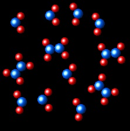
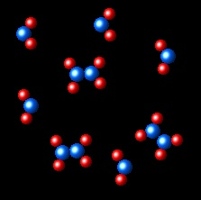
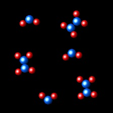
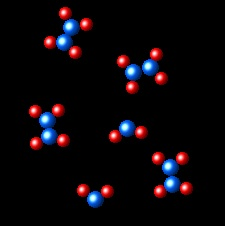

Equilibrio 4
La siguiente imagen representa un fragmento de un sistema de dos especies en equilibrio: N2O4(g) ⇄ 2 NO2(g), a una determinada temperatura.
|  |
Si a V y T constantes eliminamos una cierta cantidad de N2O4(g) y NO2(g), cuál de las siguientes imágenes representa mejor el estado final del nuevo equilibrio?
|  |  |  |  |